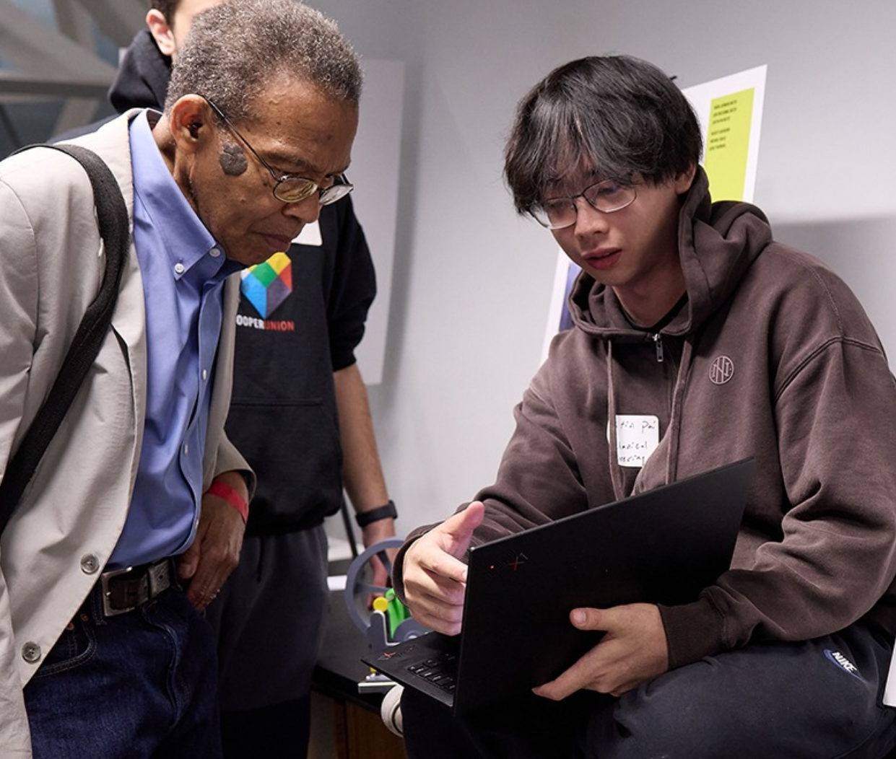

Presenting Homie Rektifier at Cooper's end-of-year showcase.
I am a mechanical engineering student at The Cooper Union (B.E. '28) with a strong foundation in both mechanical design and hands-on manufacturing.
What drives me as an engineer is the ability to turn concepts into physical reality. Over the past few years, by pairing CAD modeling with hands-on manufacturing, I have steadily built this end-to-end skillset. Whether designing CAD models for L3Harris or iterating through a dozen 3D printed prototypes, these experiences have equipped me with the knowledge and confidence to be a well-rounded design engineer.
What drives me is the discipline to become the best version of myself. Outside of engineering, you'll often find me either in the gym five days a week, leveling up my cooking skills, or diving deep into financial literacy. But when it is time to unwind, I love hitting up an all-you-can-eat place, watching a Knicks game, or a few hours of Overwatch.
I am actively seeking mechanical engineering internships for Summer 2027. My focus is in mechanical design or manufacturing, but I am open to any opportunity where I can learn, build, and add value. Feel free to reach out to discuss engineering, potential roles, or the latest Knicks game!